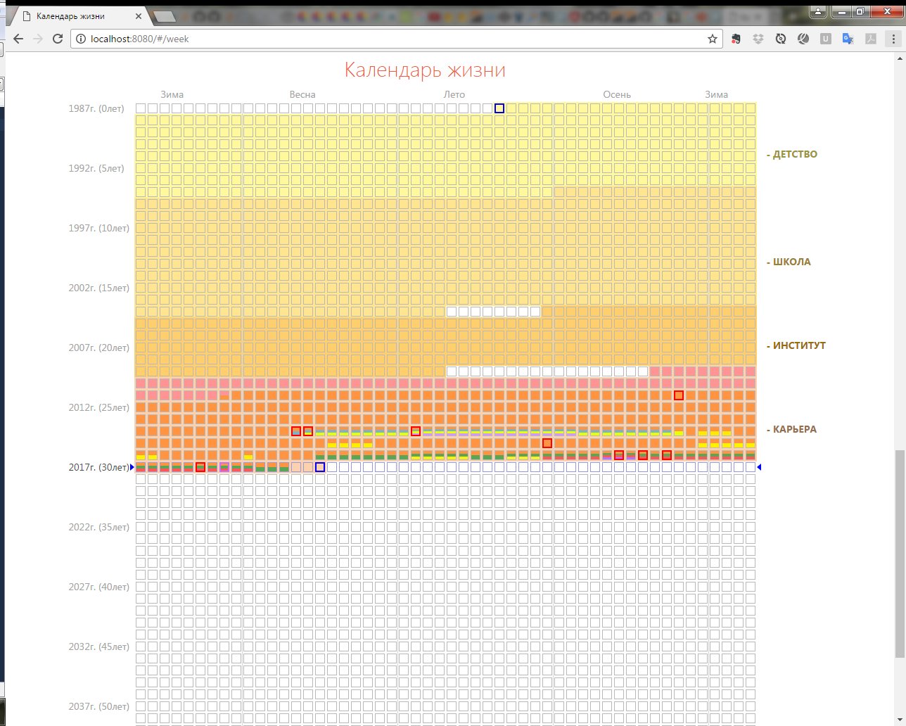
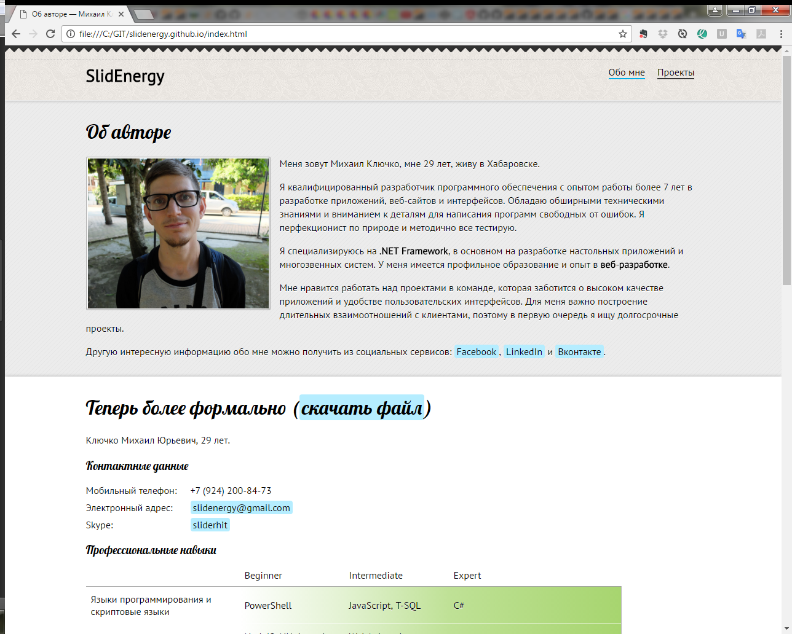

Фильтрация
По месту работы:
По типу проектов:
По языку программирования:
Другие теги:
Основные проекты
Веб-интерфейс

Веб-интерфейс является частью системы диспетчирезации ЛЭРС УЧЕТ.
С помощью веб-сайта удалось охватить новую аудиторию пользователей, которые были не готовы устанавливать отдельное приложение. Его наличие позволило компании предоставлять услуги конечным пользователям. Дополнительная аудитория увеличила общее кол-во пользователей в несколько раз.
Разработка мобильной версии веб-сайта дало возможность обслуживающим инженерам решать рабочие задачи во время выезда, находясь непосредственно на объекте. Это сильно сэкономило их время на повторные выезды до удаленных объектов, рсположенных на расстоянии десятки и сотни километров. Компания смогла сократить штат выездных сотрудников в несколько раз.
В проекте использовалось:
- ASP.NET WebForms/MVC, HTML, JavaScript
- Библиотеки: jQuery, AngularJs
- Компоненты: DevExpress ASP.NET, DevExtreme Html&JavaScript
Получен опыт разработки большого проекта с нуля.
Рабочее место оператора + сервер
Рабочее место оператора и сервер являются частями системы диспетчирезации ЛЭРС УЧЕТ.
Работа над рабочим местом оператора позволило компании поддерживать свои услуги на современном уровне, постоянно расширяя функциональные возможности продаваемого комплекса. Что в свою очередь выделило програмный продукт среди конкурентов и сделало имя компании узнаваемым в своей сфере.
В проекте использовалось:
- WinForms, C#, async programming, sockets, windows servises, ado.net, t-sql, Entity Framework
- Библиотеки: .NET 4.0, Newtonsoft
- Компоненты: DevExpress WinForms
Получен опыт работы в команде.
Фреймворк + веб-сервис soap + сервис REST Api +
Были разработаны: фреймворк, веб-сервис soap, сервис REST Api и система внешних модулей для взаимодействия программного продукта с другими системами.
Багодаря разработки фреймворка удалось упростить и стандартизировать взаимодействие компонентов системы, что в свою учередь ускорило дальнейшую разработку программного продукта и дало возможность расширять функциональность системы под свои нужны.
В результате интеграции с другими системами, компания смогла войти в занятый сектор рынка, увеличить количество клиентов и продаж, увеличить узнаваемость программного продукта.
Получен опыт разработки больших проектов с нуля и опыт работы в команде.
В проекте использовалось:
- Фреймворк: .NET 4.0, C#, async programming, sockets
- Веб-сервис xml/soap/json: .NET 4.0, C#, asmx web services
- Веб-сервис REST Api: .NET 4.0, C#, WebApi
- Система внешних модулей: .NET 4.0, C#
Менеджер лицензий + сайт + сервер
Сервер телеметрии + сайт
Информационная система в здравоохранении + утилита (2010 год)

Сайт: Статья в вестнике общественного здоровья и здравоохранения Дальнего Востока России 2010 год №1
Был разработан модуль и утилита для формирования персонифицированных заявок на льготные лекарственные препараты.
Внедренние информационной системы в деятельность муниципальных учреждений здравоохранения позволила оптимизировать формирование заявки на лекарственные средства с точки зрения их приоритетности и экономии финансовых средств в условиях лимита финансирования, ограничив количество малоприоритетных препаратов. Это сократило стоимость сводной потребности в лекарственных средствах по городу.
Таким образом, благодаря внедрению информационной системы, оптимизировано планирование лекарственных препаратов по программе государственной социальной помощи, обеспечена "адресная" лекарственная помощь, что в конечном итоге повысило удовлетворенность населения льготным лекарственным обеспечением.
В проекте использовалось:
- T-SQL, .NET WinForms,
- Компоненты DevExpress WinForms
Утилиты
Утилита настройки модемов

Используя специально разработанную утилиту, я автоматизировал сложную схему настройки всевозможных модемов для их работы со всеми поддерживаемыми приборами, что позволило сократить время ввода в эксплуатацию в сотни раз и понизить уровень входа с узкоспециализированного специалиста до уровня пользователя ПК.
Утилита восстановления базы данных
Хобби
Холостяк
Календарь жизни - LifeCalendar
Сайт: Life calendar, Проект на GitHub
Интерактивный онлайн календарь всей вашей жизни в неделях. На данном проекте, я обкатал технологию работы с angularjs и devepress (devextreme html & javascript) компоненты.
Сайт портфолио
Сайт: Об авторе - Михаил Ключко, разработчик, Проект на GitHub
Это текущий сайт, на котором вы сейчас находитесь.